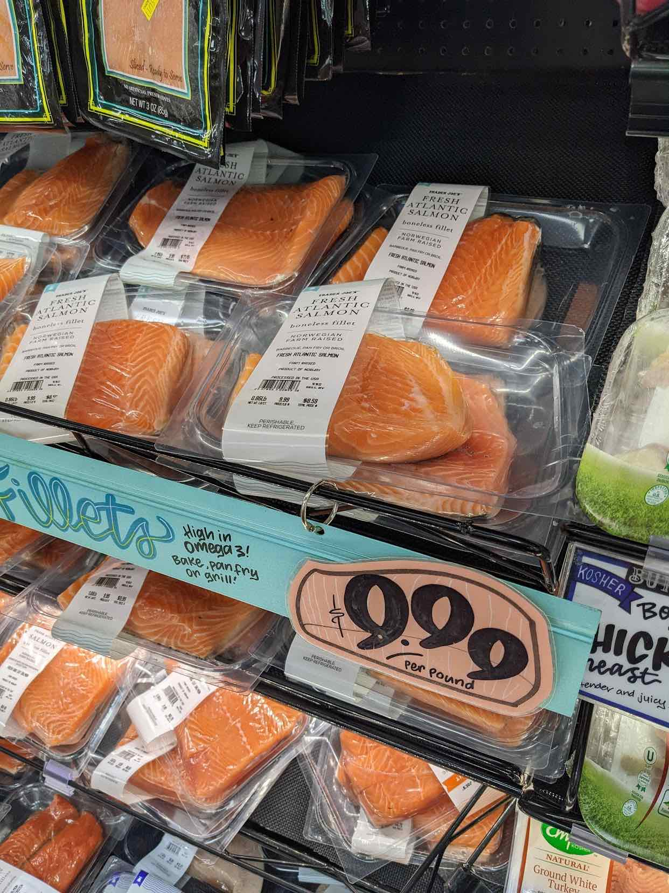
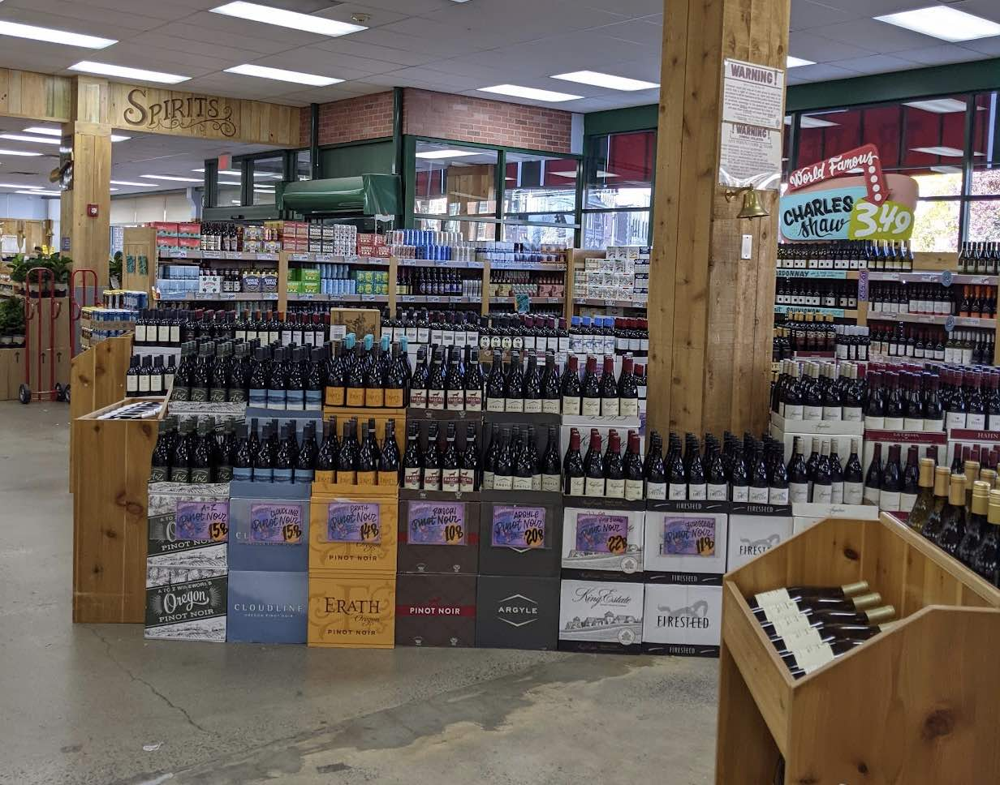
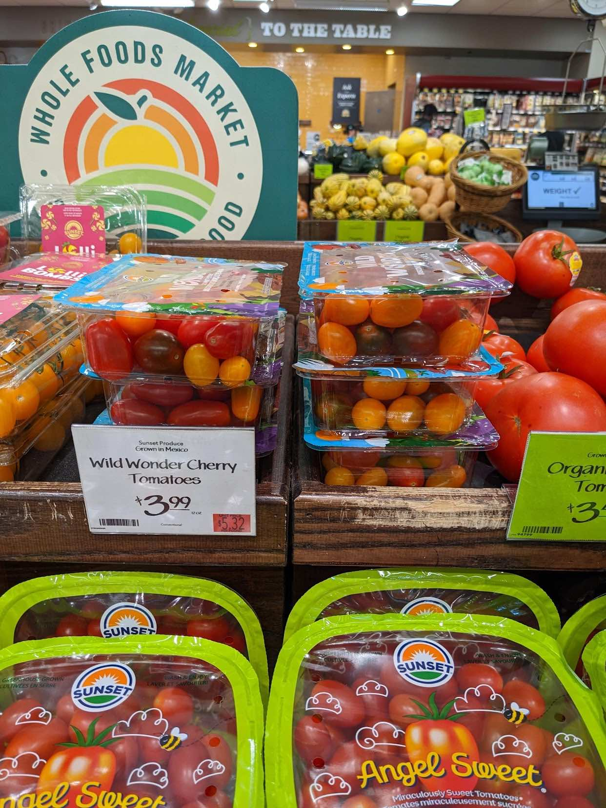
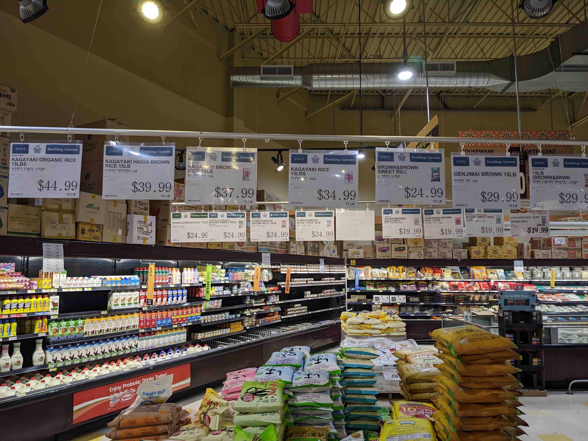

Table of Contents
1. はじめに
インフレで私の住むボストン近郊でも食材の価格が高騰しています。これまでもトレジョの野菜果物の品質や欠品具合に不満があったのですが、いよいよトレジョのコスパが悪い気がしてきたので、思い切ってメインで使うスーパーマーケットをトレジョからWhole Foodsにスイッチすることにしました。今回は自宅アパートから車でちょっと買い物に行けるスーパーマケットを紹介します。
2. 近場にあるスーパー
2.1. トレジョ(Trader Joe's)

在米日本人に大人気な、比較的安めのオーガニック系スーパーマーケットです。日本でもトレジョのエコバッグをよく目にします。独自商品の扱いがメインで、どう見てもパクリな商品も多いです。定番商品でも欠品することがしばしばあり、品揃えが安定しません。マヨネーズやオリーブオイル、インスタントコーヒーが1ヶ月切れたまま、ということもあります。

パンや乳製品、野菜などの常に買う食材が安いです。肉類(特にステーキ)は意外と高いです。野菜果物の品質はまあ許容レベル。鮮魚はサーモンくらいしかありませんが、コスパがよいと思います。

Charles Shawというコスパ最高の格安ワイン(味もそれなり)があるのですが、最近のインフレで$3.5から一気に$4.5まで高騰してしまいました。それでも飲用としてはまだまだ安い(本当に安くてまずいものは料理用にします)ですが、5年以上前は$3だったのになぁ。
トレジョは安売りをしないので、買い物が今ひとつ面白くないです。店員がとてもフレンドリーで、気分が良いです。
2.2. Whole Foods Market

トレジョと人気を二分する、オーガニック系高級スーパーです。生鮮食品が新鮮で美味しいです。金曜日には生牡蠣12個$12の特売をやっていて、もちろん生で食べられます。上質なぶん、もちろん高いです。特に高いのはパンと牛乳、チーズ。ミニベーグルはトレジョで$2.5くらいのところ、$6.5もします。対面販売の肉類はどれも美味しそうですが、意外とリーズナブルな価格設定に見えます(トレジョが高いとも言う)。
旬のローカル野菜や果物が安売りされているのもありがたいです。売出し中の果物はたいてい美味しいです。
2.3. Maruichi Japanese Food & Deli

Coolidge Cornerに支店のある日系スーパーです。普段使いするには全般的に高いですが、米や刺し身、薄切り肉の調達で月に2, 3回お世話になります。ここができるまではBurlingtonにあるH-Martまで米や薄切り肉を買い出しに行っていましたが、Maruichiができたおかげであまり行かなくなりました。意外なことに、米と一部の野菜(白菜と大根)以外はMaruichiの方が安いです。
おにぎりや弁当も置いてあります。おにぎりが1個$3以上もするのは日本人的に納得行かないのですが、夕方には安くなるという噂もあります。ツナマヨおにぎり食べたいです。空輸されたと思われる「超熟」パンが$8で売られています。日本からの輸入品は価格が日本での3倍くらいになります。
Maruichiに行くと必ず刺し身を買って海鮮丼にするので、買い物は高くなりがちです。インフレの影響を一番感じるのはこの店で、いつも買っている「かがやき」という米は$28くらいから$38まで値上がってしまいました。「かがやき」と同レベルな筈の「玉錦」に至っては$49です。信じられません。
比較的こじんまりしたスーパー(それでも売り場拡大しました)なので、品切れがそれなりにあります。まるちゃん焼きそばとオカメ納豆は常に置いておいてほしいところです。月曜火曜あたりは米がほとんど切れてしまいます。
2.4. Stop & Shop
ごく普通のアメリカンなスーパーマーケットです。値段も安くないので、あまり使いません。定番ブランド商品が欲しい時に行くくらいです。バリラやディチェコのスパゲティーとか。トレジョやWhole Foodsと比べて店員に覇気がありません。
2.5. H-Mart (Burlington)

Burlingtonやケンブリッジにある韓国系巨大スーパーです。Maruichiが近所に出来たいま、わざわざ遠くのH-Martに行くことはあまりありませんが、米がMaruichiよりも$3〜安いので、そのためだけに行くことがあります。
2.6. Market Basket (Waltham)
安い系の巨大スーパーです。普通のアメリカンスーパーですが、値段を考えると、そこまで質が低くないと思います。うちの家族はここのクラムチャウダースープのファンです。職場から近いのですが、リモートワークしているので、すっかり行かなくなってしまいました。
2.7. Wilson Farm (Lexington)
やや高級なローカルファームです。駐車場が激混みで、店に面している道路が渋滞しています。果物野菜類はさすがに新鮮で味が良いです。輸入物も平気で置いてあります。アメリカ北東部で秋になると出てくるアップルサイダーやそのドーナツはここで買います。アップルサイダーは濾過していない、にごったりんごジュースです。それで作ったアップルサイダードーナツは素朴な味がします。$5/6個でお財布にも優しい。
3. 食材別比較(2022/10)
3.1. 野菜果物
| item | Trader Joes | Whole Foods | Maruichi | H Mart 9/11 | comments |
|---|---|---|---|---|---|
| ポテト | Russet 5LB $2.99 | russet 5LB $3.69 | |||
| 玉ねぎ | vidalia 2LB $2.49 | 2LB $2.49 | |||
| 人参 | $0.99/1lb | $2.69/2lbs | |||
| もやし | $1.99/pkg | $1.49/pkg | |||
| ゴボウ | $3.89/lb | $3.5-4.5 | |||
| 大根 | $2.49/lb | $0.99/lb | |||
| キャベツ | org $1.29-1.49/lb | $1.29/lb | |||
| 赤リーフレタス | $2.69 bunch? | ||||
| 白菜 | org $1.99/lb | $1.99/lb | $0.99/lb | ||
| 青梗菜 | $2.79/lb | $2.49/lb | |||
| ブロッコリー | $2.99/lb | ||||
| ミニトマト | medley 1LB $3.69 | medley $3.99/lb | |||
| アボカド | $1.49/ea $1.25sale | ||||
| とうもろこし | $0.75/each | ||||
| マッシュルーム | white $2.49 | $2.49, $3.99 | |||
| しめじ | $2.99/3.5oz | $3.99/3.5oz | |||
| しいたけ | $3.69/pkg | ||||
| えのき | $5.99/6oz | ||||
| オクラ | $3.49/12oz | ||||
| ベビーほうれん草 | baby $2.29 | baby $2.49 | |||
| 青ネギ | $1.59 bunch | bunch $1.49 | |||
| リーク(ポロネギ) | $2.99/lb | ||||
| ミニキュウリ | baby $4.99 | ||||
| 生姜 | $4.99/lb | $3.49/lb | |||
| パクチー | $1.69 bunch | ||||
| ニラ | $6.49/lb | ||||
| 長芋 | $5.99/lb | $15.99/lb | |||
| 里芋 | $1.49/lb | ||||
| butternut squash | $1.99/lb | ||||
| 赤ピーマン | red $3.99/lb | ||||
| リンゴ フジ | each $0.69 | $2.49/lb ($0.8) | |||
| リンゴ Honey Crisp | each $1.29 | $4.59/lb | |||
| 緑キウイ | $4.99/5個 |
- 全般的にWhole Foods高めだが質はいい。
- 大根、白菜はH Martが安い。キムチのせいか?
- フルーツは味でWhole Foodsの圧勝。トレジョにおいしいフルーツはあまりない
3.2. 肉さかな
| item | Trader Joes | Whole Foods | Maruichi | H Mart 9/11 | comments |
|---|---|---|---|---|---|
| 豚ごく薄切り肉 | $10.99/lb | $14.99/lb | しゃぶしゃぶ用 | ||
| 豚薄切り肉 | $9.99/lb | ||||
| 豚ソテー用 | $7.99/lb | ||||
| 豚ブロック大 | $5.99/lb | ||||
| 牛ごく薄切り肉 | $16.99/lb | しゃぶしゃぶ用 | |||
| 牛ひき肉 | $5.99/lb 80/20 | ||||
| 豚ひき肉 | $5.99/lb | $5.99-6.99/lb | |||
| 鶏ひき肉 | $3.99/lb mx | $7.99/lb brest | |||
| shaved beef | $10.99/pkg? | ||||
| 鶏手羽(元+先) | party $4.99/lb | party $5.99/lb | |||
| 鶏手羽元(のみ?) | $6.99/lb | ||||
| 鶏モモ | $4.99/lb | $5.99/lb | |||
| ラムのラック | $22.99/lb | 美味しいです | |||
| NYストリップステーキ | $19.99/lb | $13.99/lb sale | |||
| リブアイステーキ | $18.99/lb | ||||
| トップサーロイン | $11.99/lb sale | ||||
| 牛タン(丸ごと) | $6.99/lb | 自分でさばきます | |||
| ベーコン | $6.49/12oz | $8.99/12oz | |||
| ハム | $4.69/8oz | ||||
| 生サーモン | $9.99/lb | $14.99/lb | 日本の鮭より美味しい | ||
| 生タラ | $14.99/lb | ||||
| 生カジキマグロ | $10.99/lb | $16.49/lb sale | |||
| マグロ赤身刺身 | $39.99/lb | ||||
| サーモン刺身 | $29.99/lb | ||||
| ハマチ刺身 | $26.99/lb |
- 薄切り肉はMaruichiがよい。H-Martは意外と高い。
- 対面で買える肉はWhole Foodsの質が良い
- Whole Foodsには鶏ひきのthighが無いのが痛い。胸ひきは高すぎ。トレジョはもも胸混合だが安い。
- 魚はWhole FoodsとMaruichi(さしみ)のみ
- 例外として、サーモンはトレジョがコスパよい。普段見ないがカジキマグロが安かった。
3.3. 卵、乳製品
| item | Trader Joes | Whole Foods | Maruichi | H Mart 9/11 | comments |
|---|---|---|---|---|---|
| マヨネーズ | org $3.49/16floz | org $4.69/16floz | |||
| 卵大 | $3.99/12個 | $5.99/18個 | |||
| 牛乳 galon | $3.59 | org $6.29 | |||
| 牛乳 half galon | $2.29 | org $3.79 | |||
| ヨーグルト1l | $3.99 | org $3.99 | |||
| $4.69 cream top | |||||
| Kerrygold irish バター | $3.99 | $4.99 or $5.29 | |||
| 生クリーム 0.5l? | $3.49/3.99 |
- 牛乳はトレジョが安い。Whole Foodsのはオーガニックだが、ちょっと高すぎる。
- ヨーグルトは意外と変わらない
- Kerrygoldのirishバターはトレジョで買うべし。
3.4. パン
| item | Trader Joes | Whole Foods | Maruichi | H Mart 9/11 | comments |
|---|---|---|---|---|---|
| 普通の白パン | $2.49 | $3.49, org $4.49? | |||
| 全粒粉パン | $2.49 | org $4.29 | |||
| sourdough | $3.29 | org $3.99 | |||
| ミニベーグル | $2.49 | $6.49? | |||
| ミニクロワッサン | $7.00/12ct | ||||
| Pasco超熟(!) | $7.99 |
- Whole Foodsの方がトレジョよりも美味しいが高い
- Whole Foodsのミニベーグルは$6オーバーで論外
3.5. 米、麺類
| item | Trader Joes | Whole Foods | Maruichi | H Mart 9/11 | comments |
|---|---|---|---|---|---|
| まるちゃん焼きそば | $3.89 | $4.99 | |||
| 讃岐うどん乾麺 | $5.49 | ||||
| 讃岐うどん冷凍 | $6.99-7.99 | ||||
| 米 たまきゴールド | $46.19/15lb | $34.99/15lb sale | 高級 | ||
| 米 かがやき | $37.99/15lb | $34.99/15lb | 美味しい | ||
| 米 玉錦 | $49.29/15lb | $49.99/15lb | 美味しい | ||
| 米 錦 | $33.89/15lb | $27.99/15lb? | 美味しくない | ||
| パスタ | $0.99/lb |
- 米はH-Martが安い。近場のMaruichiで買う気になるのは唯一かがやきのみ。でも$3高い。
- まるちゃん焼きそばはMaruichiの方がが安い
3.6. その他
| item | Trader Joes | Whole Foods | Maruichi | H Mart 9/11 | comments |
|---|---|---|---|---|---|
| ツナ缶 | $2.29 | albacore $3.49 | light $1.49/5oz | ||
| オイルサーディン | $1.69 | ||||
| アンチョビ | $1.59 | ||||
| パン粉 | $3.89/480g | ||||
| おかめ納豆 | $3.19 | ||||
| 豆腐 | $1.99 | ||||
| 油揚げ | $3.19/5sl | ||||
| バルサミコ酢 | $5.99 | ||||
| オリーブオイル Ex.V | $5.99/l | ||||
| ごま油 | $26.69/1.6l | $29.99/1.6l | |||
| $15.19/654ml | $16.99/654ml | ||||
| $9.99/436ml | $5.49/163ml | ||||
| インスタントコーヒー | $4.49 | ||||
| 日本酒 | $6.99 松竹梅750ml |
- Whole FoodsにはなぜかFirm豆腐しかおいていないことが多い。Softくらいがちょうどよい気がする
- 魚の缶詰はトレジョで
- Extra virginオリーブオイルもトレジョ。半額。